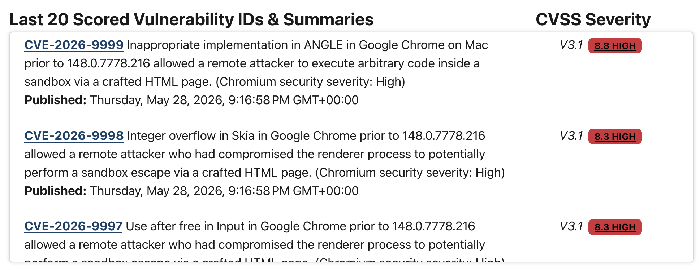
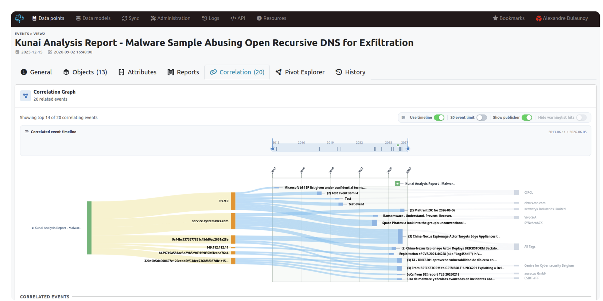
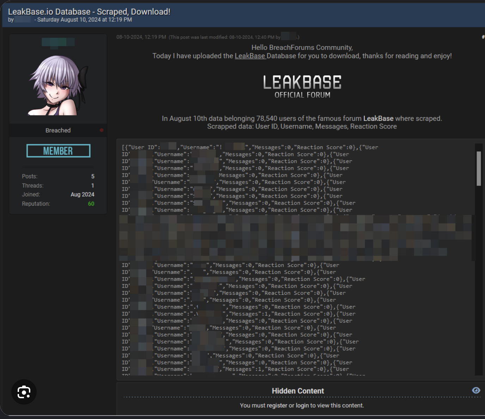

Cyber Threat Intelligence
Anton Holmström
Luleå University of Technology
A0002E, LECTURE 9: CYBER THREAT INTELLIGENCE
One of these is attacking you right now.
Which one?
WAKE-UP
Wall = raw indicators: IP addresses, domain names, file hashes.
All values are made up (reserved documentation ranges).
ASK THE ROOM: how would you find the one that matters?
Knowing which one, and what to do about it.
That is cyber threat intelligence.
POINT
Data alone does not tell you which one.
CTI: which one, who is behind it, what to do about it.
After today, you can…
- 1explain what cyber threat intelligence is
- 2describe how it is used to create value
- 3apply it in a practical exercise
GOALS
1. Know what CTI is.
2. Know how it is used to create value.
3. Apply it in a practical exercise.
Today’s lecture
AGENDA
Five parts. Group exercise in the last part.
GOAL 1: parts 1–2. GOAL 2: parts 3–4. GOAL 3: part 5.
Attacker versus defender
Two sides, one target.
ATTACKER VS DEFENDER
Cybersecurity, like all protective work (national security, police work), is essentially always attacker vs defender.
The meaning of “attacker” and “defender” varies with context. The concept is always the same: one side tries to harm or destroy something, the other tries to protect it.
Attacker versus defender
Cyber threat intelligence moves knowledge about the attacker over to the defender.
CTI IS NOT A DEFENSIVE ACTIVITY PER SE
In cybersecurity we are always carrying out defensive activities.
CTI is part of cybersecurity, but it does not in itself stop an attack from happening.
Its goal: to advise the defender on how to best defend against the attacker.
WHERE THE ADVICE COMES FROM
Frameworks, methods, and structured ways of gathering, analyzing and interpreting data and information.
This makes the advice accurate, actionable and relevant to the specific threat landscape.
So what is threat intelligence?
198.51.100.24
192.0.2.45
cdn-update.example
login-check.invalid
9f2c41e07ab35d6688c1f0b7a4d2e913
- Data Breach Investigations ReportVerizon
- Global Threat ReportCrowdStrike
- Threat LandscapeENISA
For some, it is nothing but data: lists of bad IP addresses to feed the firewall.
DIFFERENT DEFINITIONS, DIFFERENT PERSPECTIVES
Google “cyber threat intelligence”: plenty of different definitions, and an equal amount of use cases.
DATA
For some, CTI is nothing but data to create a set of rules for your firewall, such as lists of bad IP addresses or bad HTML.
So what is threat intelligence?
198.51.100.24
192.0.2.45
cdn-update.example
login-check.invalid
9f2c41e07ab35d6688c1f0b7a4d2e913
- Data Breach Investigations ReportVerizon
- Global Threat ReportCrowdStrike
- Threat LandscapeENISA
For others, it is thematic reporting on threats and attacks.
REPORTING
Some say it is thematic reporting, like threat reports or attack reports.
Verizon Data Breach Investigations Report. CrowdStrike Global Threat Report. Even governmental reports such as ENISA Threat Landscape.
So what is threat intelligence?
198.51.100.24
192.0.2.45
cdn-update.example
login-check.invalid
9f2c41e07ab35d6688c1f0b7a4d2e913
- Data Breach Investigations ReportVerizon
- Global Threat ReportCrowdStrike
- Threat LandscapeENISA
And some say it is a structured analysis of threats.
ANALYSIS
And some might say that cyber threat intelligence is a structured analysis of threats.
So what is threat intelligence?
198.51.100.24
192.0.2.45
cdn-update.example
login-check.invalid
9f2c41e07ab35d6688c1f0b7a4d2e913
- Data Breach Investigations ReportVerizon
- Global Threat ReportCrowdStrike
- Threat LandscapeENISA
Cyber threat intelligence is all of these.
ALL OF THESE
However, for me, cyber threat intelligence is all of these.
CTI is the combination of all those things. For example, you most definitely need to be aware of bad IP addresses to be able to block them from entering or even talking to your network.
If we break it down
Anything involving, using or relating to computers, especially the internet.
Any potential danger, risk or malicious activity that could cause harm or damage.
The practice of collecting, standardising and analysing data to disseminate actionable information.
IF WE BREAK IT DOWN
CYBER
Essentially, “cyber” can be defined as anything involving, using, or relating to computers, especially the internet.
If we break it down
Anything involving, using or relating to computers, especially the internet.
Any potential danger, risk or malicious activity that could cause harm or damage.
The practice of collecting, standardising and analysing data to disseminate actionable information.
THREAT
A “threat” refers to any potential danger, risk, or malicious activity that has the potential to cause harm or damage.
If we break it down
Anything involving, using or relating to computers, especially the internet.
Any potential danger, risk or malicious activity that could cause harm or damage.
The practice of collecting, standardising and analysing data to disseminate actionable information.
INTELLIGENCE
A word that is difficult to define.
Merriam-Webster: information concerning an enemy or possible enemy or an area.
Within the context we are in now, this definition works better: the practice of collecting, standardising and analysing data to disseminate actionable information.
A working definition
WHAT IS THREAT INTELLIGENCE?
Cyber threat intelligence, also known as threat intelligence, is any evidence-based knowledge about threats that can inform decisions (McMillan 2013).
AIM: preventing an attack or shortening the window between compromise and detection.
CTI can also be information that, instead of aiding specific decisions, helps to illuminate the risk landscape (Chismon and Ruks 2015).
Actionable information
Information is actionable when someone can do something with it.
“Ransomware attacks against the public sector are increasing.”
“A ransomware group is getting in through unpatched VPN gateways at municipalities like ours. Patch ours before the weekend.”
The second message is about us, and it says what to do and by when.
ACTIONABLE INFORMATION
CTI = actionable information.
Actionable: the receiver can make a decision or take an action because of it.
The second message is about us, and it says what to do and by when.
The two examples on the slide are made up for illustration.
Much like a weather forecast
Weather forecasting
Allows organizations and individuals to shelter and prepare.
Threat intelligence
Details how adversaries compromise and disrupt systems, so that defenders can prepare before, during and after an incident.
WEATHER FORECAST
Much like how weather forecasting allows organizations and individuals to shelter and prepare, threat intelligence details how adversaries compromise and disrupt systems so that defenders can better prepare to protect themselves before, during, and after an incident.
RISK ASSESSMENT EXAMPLE
When you did the risk assessment with Simon: how did you know what threats were out there? How did you determine the likelihood that they would be realized?
If you had CTI you would probably have more information available to make better decisions.
Six questions about the adversary
Threat intelligence uses a variety of data to produce knowledge about adversaries.
The adversaries, their sponsors and employers
What they use, including capabilities and infrastructure
What they target: industries, verticals and geographic regions
When they act: timelines and patterns of life
Their motives and intent
How they operate: behaviours and patterns
KNOWLEDGE ABOUT ADVERSARIES
Threat intelligence delivers on this goal by using a variety of data to produce knowledge on adversaries, such as:
WHO are the adversaries, their sponsors and employers.
WHAT adversaries use, including their capabilities and infrastructure.
WHERE do the adversaries target: what industries, verticals and geographic regions.
WHEN do the adversaries act: identifying timelines and patterns of life.
WHY do they attack: what are their motives and intent.
HOW do they operate: what are their behaviours and patterns.
Data, information and intelligence are different things
Operational environment. Where we start gathering data.
Figure after Joint Publication 2-0, Joint Intelligence.
NOISE, DATA, INFORMATION, INTELLIGENCE
There is a huge difference between noise, threat data, information, and intelligence. Understanding the difference is essential to getting the most out of a threat intelligence platform.
The relationship between data, information and intelligence can lead to actionable intelligence.
OPERATIONAL ENVIRONMENT
The first stage. It is where we start gathering data.
Data, information and intelligence are different things
Data. Simple facts, available in large volumes, such as IP addresses or logs. By itself, raw data is of limited use. Think of it as individual pieces of the puzzle.
Figure after Joint Publication 2-0, Joint Intelligence.
DATA
Simple facts that tend to be available in large volumes.
In cyber security: IP addresses or logs are typical examples.
By itself, raw data is of limited utility. Think of it as individual pieces of the puzzle.
Data, information and intelligence are different things
Information. Data that has been processed, aggregated and organised, with more context. It answers questions like “How many times have employees accessed a specific website within a month?”
Figure after Joint Publication 2-0, Joint Intelligence.
INFORMATION
Prepared data that has been processed, aggregated and organized into a more human-friendly format that provides more context and is useful for some form of analysis.
A combination of multiple data points.
Answers questions like: “How many times have employees accessed a specific website within a month?”
The result of analyzing various data points together.
Data, information and intelligence are different things
Intelligence. Data and information correlated and analysed in context, to see the bigger picture. The output must be relevant, actionable and valuable.
Figure after Joint Publication 2-0, Joint Intelligence.
INTELLIGENCE
Takes it a step further: correlating data and information to extract patterns of actions based on contextual analysis.
Understanding the bigger picture and the story that the data and information tell.
Data and information that has been refined, analysed and processed. The output must be relevant, actionable and valuable.
Those three requirements are achieved through logical and analytical processes conducted by humans, who can provide contextual data and produce useable output.
Three categories of threat intelligence
Technical indicators and behaviours that inform network-level action and remediation.
One threat, seen from three levels.
CATEGORIES OF THREAT INTELLIGENCE
TACTICAL
Audience: security operations, network defenders, incident responders.
Technical indicators and behaviors to inform network-level action and remediation.
The example sentence on the slide is made up for illustration.
Three categories of threat intelligence
Intelligence on adversary behaviour. It informs holistic remediation, threat hunting, behavioural detection, purchasing decisions and data collection.
One threat, seen from three levels.
OPERATIONAL
Audience: threat hunters, incident response, security leadership.
Intelligence on adversary behavior informing: holistic remediation, threat hunting, behavioral detection, purchasing decisions and data collection.
The example sentence on the slide is made up for illustration.
Three categories of threat intelligence
Places the threat in a business context and describes strategic impact. It informs risk management and organisational direction.
One threat, seen from three levels.
STRATEGIC
Audience: security leadership, organizational leadership.
Places threat into a business context and describes strategic impact, informing risk management and organizational direction.
The example sentence on the slide is made up for illustration.
Three categories of threat intelligence
One threat, seen from three levels.
ONE THREAT, THREE LEVELS
Same ransomware threat, seen by three audiences.
Tactical: what to block. Operational: how they work. Strategic: what it means for the organisation.
Where the data comes from
What do we already see ourselves?
What have others already found?
What are people saying?
Source categories after Recorded Future, The Intelligence Handbook.
SOURCES OF INTELLIGENCE
INTERNAL
What the organisation already collects: network traffic, logs, scans. SIEM and firewall are typical places to find it.
Where the data comes from
What do we already see ourselves?
What have others already found?
What are people saying?
Source categories after Recorded Future, The Intelligence Handbook.
TECHNICAL
Vulnerability databases and threat feeds.
A vulnerability database

Three new Chrome vulnerabilities, each with a CVE ID, a summary and a severity score.
National Vulnerability Database (NVD), nvd.nist.gov
EXAMPLE: NVD
National Vulnerability Database. Latest scored vulnerabilities: CVE ID, summary, CVSS severity.
On screen: three Google Chrome vulnerabilities, CVSS 8.3 to 8.8 (High).
A threat feed

One malware report, linked to 20 related events through the IP addresses, domains and hashes they share.
MISP, correlation graph for one event
EXAMPLE: MISP
Platform for sharing threat intelligence.
Event: Kunai Analysis Report, a malware sample abusing open recursive DNS for exfiltration.
Correlation graph: the indicators in this event (IP addresses, a domain, hashes) also appear in 20 other events.
Where the data comes from
What do we already see ourselves?
What have others already found?
What are people saying?
Source categories after Recorded Future, The Intelligence Handbook.
HUMAN
Dark web, social media, forums.
A forum

Data on 78,540 users of the LeakBase forum, scraped and posted on BreachForums.
BreachForums post, 10 August 2024. Usernames redacted.
EXAMPLE: FORUM POST
BreachForums, 10 August 2024.
Data on 78,540 users of the forum LeakBase was scraped: user ID, username, messages, reaction score.
Usernames are redacted in the screenshot.
Where the data comes from
What do we already see ourselves?
What have others already found?
What are people saying?
Source categories after Recorded Future, The Intelligence Handbook.
ALL THREE FEED THE SAME ANALYSIS
Collection draws on internal, technical and human sources.
Indicators of compromise
An indicator of compromise (IoC) is a piece of evidence that a system may have been breached.
09:14:02 ALLOW 10.0.4.17 → 198.51.100.23:44309:14:03 ALLOW 10.0.4.52 → 192.0.2.80:44309:14:05 ALLOW 10.0.4.31 → 203.0.113.66:44309:14:06 DENY 10.0.4.17 → 198.51.100.7:2509:14:09 ALLOW 10.0.4.88 → 192.0.2.14:443
The address from the feed is in our own log. One of our computers has contacted a server that an attacker controls.
INDICATORS OF COMPROMISE (IoC)
An indicator of compromise is a piece of evidence that a system may have been breached.
Same address as on the opening slide: 203.0.113.66.
On its own, the address in a feed is only data. It becomes useful when we compare it with what we see ourselves.
(Feed entry and log lines are made up.)
Indicators of compromise
An indicator of compromise (IoC) is a piece of evidence that a system may have been breached.
09:14:02 ALLOW 10.0.4.17 → 198.51.100.23:44309:14:03 ALLOW 10.0.4.52 → 192.0.2.80:44309:14:05 ALLOW 10.0.4.31 → 203.0.113.66:44309:14:06 DENY 10.0.4.17 → 198.51.100.7:2509:14:09 ALLOW 10.0.4.88 → 192.0.2.14:443
The address from the feed is in our own log. One of our computers has contacted a server that an attacker controls.
A MATCH
10.0.4.31 is one of our own computers. It has connected to the address from the feed.
The indicator does not say what happened. It says where to start looking.
Next step: investigate that computer, block the address.
Common types of indicator
Each one is something you can search for in your own systems.
A server the attacker controls
A fake login page used for phishing
The fingerprint of one exact malicious file
One of our logins, found in a leaked list
A pattern in the code that many versions of the same malware share
A computer that calls the same server at fixed intervals
COMMON TYPES
IP addresses, domain names, hashes, usernames and passwords, malware signatures, network traffic patterns.
Hash: identifies one exact file. Change one byte and the hash is different.
Signature: a pattern that matches many versions of the same malware.
Traffic pattern: regular calls to the same server can be malware asking for instructions.
(All examples are made up.)
Where indicators are used
Add the indicator to a blocklist. From now on, no computer on our network can reach the address.
One indicator, used in four places.
BLOCK
Put the indicator in a blocklist: firewall, web proxy, email filter.
Stops new connections. Says nothing about what already happened.
Where indicators are used
Load the indicator into the tools that watch our systems. They raise an alert when it shows up.
One indicator, used in four places.
DETECT
The same indicator as a detection rule in SIEM, intrusion detection or antivirus.
An alert tells us which computer, and when.
Where indicators are used
Search old logs for the indicator. A hit shows which computers to examine and when it started.
One indicator, used in four places.
INVESTIGATE
Search backwards in stored logs.
Requires that the logs have been kept. No logs, no answer.
Where indicators are used
Send the indicator to others who face the same threat. That is how it reached our feed in the first place.
One indicator, used in four places.
SHARE
Indicators are shared through platforms such as MISP, sector networks and national CERTs.
Our feed is someone else sharing what they found.
Where indicators are used
One indicator, used in four places.
ONE INDICATOR, FOUR USES
Block, detect, investigate, share.
(All examples on these slides are made up.)
An example
A threat feed we subscribe to lists IP addresses that took part in a DDoS attack on another company.
Is this intelligence?
Lets take a small breather and look at an example.
Your information security department subscribe to numerous of threat feeds, and one of your threat feeds shows a number of IP address that took part in an DDoS Attack on another company.
Now, would you say this is intelligence?
(IP addresses on the slide are made up.)
An example
We analyse the list. One of the addresses comes from our own network.
Is it now intelligence?
You gather that data and analyze it to realize that, hey one of the IP’s used in the attack comes from your organizations network.
Is it now intelligence?
An example
The attack ran on a network of compromised devices. The attackers got in through malware called strong_net.exe.
Is this intelligence?
And you dig deeper and realize that the DDoS attack utilize a network of compromised devices to perform the attack, and that the attackers gained access through a malware called strong_net.exe
Is this intelligence?
An example
The group behind strong_net.exe calls itself The Hungry Flamingos. They deliver the malware through phishing emails and do not care who the victim is.
You go even further and see that the criminal group associated with strong_net.exe calls themselves ”The Hungry Flamingos” and is typically known for delivering their malware through phishing emails. You learn that this group is don’t care who they target, as long as their victim downloads the malware in the phishing email.
An example
What can we make of this?
What does it mean?
What can you do about it?
Four findings, in no order
A model sorts what we know about an attack and shows what is still missing.
WHAT WE HAVE AFTER THE EXAMPLE
Four findings, in the order we happened to find them.
Models for understanding attacks: ways to sort what we know and see what is missing.
Three models, same case in all of them: the Diamond Model, the Cyber Kill Chain, MITRE ATT&CK.
The Diamond Model
Start from the corner you know and ask about the other three. We started with four IP addresses and ended with a named group.
THE DIAMOND MODEL
Every intrusion has four features: adversary, capability, infrastructure, victim.
An adversary uses a capability over an infrastructure against a victim.
Source: Caltagirone, Pendergast and Betz (2013), The Diamond Model of Intrusion Analysis.
The Diamond Model
Start from the corner you know and ask about the other three. We started with four IP addresses and ended with a named group.
INFRASTRUCTURE
What the attack runs through. Here: the compromised devices that sent the traffic.
The first thing we saw in the example: the IP addresses in the feed.
The Diamond Model
Start from the corner you know and ask about the other three. We started with four IP addresses and ended with a named group.
VICTIM
The company that was attacked.
We are a victim too: our computer was infected and used in the attack.
The Diamond Model
Start from the corner you know and ask about the other three. We started with four IP addresses and ended with a named group.
CAPABILITY
The tools and techniques. Here: the malware strong_net.exe, delivered by phishing email.
The Diamond Model
Start from the corner you know and ask about the other three. We started with four IP addresses and ended with a named group.
ADVERSARY
The Hungry Flamingos.
The corners are linked. Knowing one lets us ask about the others: we went from IP addresses to malware to a named group.
The Cyber Kill Chain
An attack happens in steps, in a fixed order. The model names seven of them.
Model: Lockheed Martin, Cyber Kill Chain.
CYBER KILL CHAIN (Lockheed Martin)
Break down adversaries actions into steps.
Helps identify which stage-specific activity occurred when investigating an attack.
Gain deeper understanding of attackers Tactics Techniques and Procedures.
Seven steps: reconnaissance, weaponization, delivery, exploitation, installation, command and control, actions on objectives.
The Cyber Kill Chain
Our case, placed on the chain. One step is still empty.
Model: Lockheed Martin, Cyber Kill Chain.
THE HUNGRY FLAMINGOS ON THE CHAIN
Weaponization: the malware is packed into a phishing email.
Delivery: the email arrives. Exploitation: a user downloads the malware. Installation: strong_net.exe on the computer.
Command and control: the computer joins the network of compromised devices.
Actions on objectives: the DDoS attack.
Reconnaissance: not known. The group does not care who they target.
The Cyber Kill Chain
The attacker needs every step to succeed. The defender only has to break one, and the earlier it breaks, the less damage is done.
Model: Lockheed Martin, Cyber Kill Chain.
WHERE CAN WE BREAK IT?
Delivery: email filter. Exploitation: awareness training. Installation: antivirus. Command and control: block the address in the firewall.
Same uses of indicators as before: block and detect.
Break one step and the rest does not happen.
MITRE ATT&CK
A public knowledge base of how attackers work, built from real attacks. Each tactic is something the attacker is trying to achieve.
Source: MITRE ATT&CK, Enterprise matrix, v19 (attack.mitre.org).
MITRE ATT&CK
Adversarial Tactics, Techniques and Common Knowledge.
Free, public knowledge base maintained by MITRE. Built on attacks observed in the real world.
TACTIC = why. What the attacker is trying to achieve at that point.
TECHNIQUE = how. The way they achieve it.
Enterprise matrix, v19: 15 tactics. Older material shows 14, with Defense Evasion where Stealth and Defense Impairment are now.
Kill chain: seven steps in a fixed order. ATT&CK: more detail, and no fixed order.
MITRE ATT&CK
“Adversaries may send phishing messages to gain access to victim systems.”
Under each tactic are techniques: the ways attackers achieve it. We look up the one we saw in our case.
Source: MITRE ATT&CK, Enterprise matrix, v19 (attack.mitre.org).
PHISHING, T1566
Tactic: Initial Access. “The adversary is trying to get into your network.”
Every technique has an ID, a description, known groups that use it, mitigations and detections.
Sub-techniques of phishing: attachment, link, via a service, voice.
OUR CASE
Phishing email carrying strong_net.exe.
Other parts of the case can be looked up the same way: User Execution (T1204), Network Denial of Service (T1498).
MITRE ATT&CK
“Adversaries may send phishing messages to gain access to victim systems.”
An IP address is easy for the attacker to replace. Their way of working is not, and ATT&CK lists what to do about it.
Source: MITRE ATT&CK, Enterprise matrix, v19 (attack.mitre.org).
WHAT DO WE DO ABOUT IT?
Six mitigations listed for T1566.
User Training (M1017): users can be trained to identify social engineering techniques and phishing emails.
Antivirus/Antimalware (M1049): anti-virus can automatically quarantine suspicious files.
Software Configuration (M1054): anti-spoofing and email authentication, SPF and DKIM.
Restrict Web-Based Content (M1021): block websites or attachment types that are not needed.
Network Intrusion Prevention (M1031): systems that scan and remove malicious attachments or links.
Audit (M1047): audits or scans of systems, permissions, software and configurations.
COMPARE WITH THE KILL CHAIN
Email filter, awareness training, antivirus: the same answers, now from a shared catalogue.
INDICATOR VS BEHAVIOUR
Block 203.0.113.66 and the group moves to a new address. Phishing is still how they get in.
You are on shift in the SOC
- Form groups of three or four around one laptop.
- Open the link.
- Nine alerts came in during the night. Find out who did what, in which order, and what to do now.
- You have about 15 minutes. Then we discuss your report together.
GROUP EXERCISE: SOC SHIFT
Web activity, about 15 minutes, groups of three or four at one laptop.
Step 1: the Diamond Model. Fill the four corners with values from the alert log.
Step 2: the Cyber Kill Chain. Four of the seven stages have an alert.
Step 3: attack type and what to do now.
The page checks the answers and gives hints.
DISCUSS AFTERWARDS (questions on the last screen)
Is the report intelligence? What makes it more than the nine alerts?
Who needs it, and what does each of them need to hear?
Which stage of the kill chain would you have wanted to break, and with what?
Questions?
Thank you for today.
Anton Holmström, Luleå University of Technology
QUESTIONS
Thank you for today.